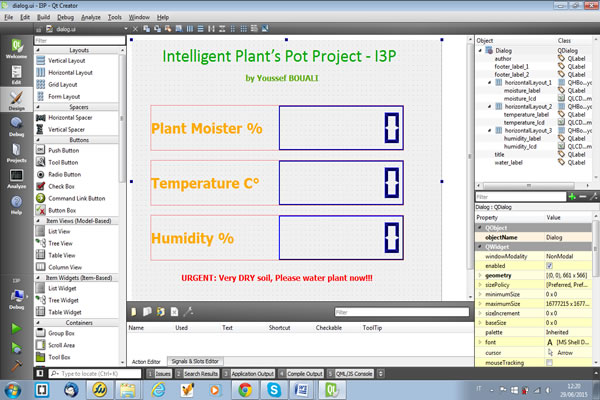

Project I3P - Step 4 : Application and Interface programming
Now that all the hardware part is installed and functioning, along with the electronic programs loaded to the board and sending data over serial port, I will move to develop a GUI that displays information on the computers about the plant health and display alert when the plant requires water.
As I have mentioned in module Module 14: Interface and Application Programming, I have already developed an initial application that would be used as starting point for my project application.
I used the C++ programming language and the Qt Creator application in order to develop the application. The major parts of the development had to deal with:
• User interface
• Establishing communication with the board and reading data
• Parsing of data to correct format
• Display of data on the application user interface
Therefore, for the graphical part I used the QT visual design tool:

Then I moved to the coding part where I had to work on three parts: dialog.h, dialog.cpp, and main.cpp
#include "dialog.h"
#include "ui_dialog.h"
#include
#include
#include
#include
#include
Dialog::Dialog(QWidget *parent) :
QDialog(parent),
ui(new Ui::Dialog)
{
ui->setupUi(this);
ui->moisture_lcd->display("-------");
ui->temperature_lcd->display("-------");
ui->humidity_lcd->display("-------");
ui->water_label->hide();
arduino = new QSerialPort(this);
serialBuffer = "";
parsed_dt1 = "";
parsed_dt2 = "";
parsed_dt3 = "";
moist_value = 0.0;
temp_value = 0.0;
humid_value = 0.0;
/*
* Use this code lines to get the vendor ID and Product ID of Arduino conncected to serial port.
*
*
qDebug() << "Number of ports: " << QSerialPortInfo::availablePorts().length() << "\n";
foreach(const QSerialPortInfo &serialPortInfo, QSerialPortInfo::availablePorts()){
qDebug() << "Description: " << serialPortInfo.description() << "\n";
qDebug() << "Has vendor id?: " << serialPortInfo.hasVendorIdentifier() << "\n";
qDebug() << "Vendor ID: " << serialPortInfo.vendorIdentifier() << "\n";
qDebug() << "Has product id?: " << serialPortInfo.hasProductIdentifier() << "\n";
qDebug() << "Product ID: " << serialPortInfo.productIdentifier() << "\n";
}
*/
// Identify the port the arduino uno is on.
bool arduino_is_available = false;
QString arduino_uno_port_name;
// For each available serial port
foreach(const QSerialPortInfo &serialPortInfo, QSerialPortInfo::availablePorts()){
// check if the serialport has both a product identifier and a vendor identifier
if(serialPortInfo.hasProductIdentifier() && serialPortInfo.hasVendorIdentifier()){
// check if the product ID and the vendor ID match those of the arduino uno
if((serialPortInfo.productIdentifier() == arduino_uno_product_id)
&& (serialPortInfo.vendorIdentifier() == arduino_uno_vendor_id)){
arduino_is_available = true; // arduino uno is available on this port
arduino_uno_port_name = serialPortInfo.portName();
}
}
}
// Open and configure the arduino port if available
if(arduino_is_available){
qDebug() << "Arduino port FOUND...\n";
arduino->setPortName(arduino_uno_port_name);
arduino->open(QSerialPort::ReadOnly);
arduino->setBaudRate(QSerialPort::Baud9600);
arduino->setDataBits(QSerialPort::Data8);
arduino->setFlowControl(QSerialPort::NoFlowControl);
arduino->setParity(QSerialPort::NoParity);
arduino->setStopBits(QSerialPort::OneStop);
QObject::connect(arduino, SIGNAL(readyRead()), this, SLOT(readSerial()));
}else{
qDebug() << " CANNOT find the correct port for Arduino.\n";
QMessageBox::information(this, "Serial Port Error", "Couldn't open serial port to arduino.");
}
}
Dialog::~Dialog()
{
if(arduino->isOpen()){
arduino->close(); // Close the serial port if it's open.
}
delete ui;
}
void Dialog::getSerial()
{
/*
* readyRead() doesn't guarantee that the entire message will be received all at once.
* The message can arrive split into parts. Therefore we need to buffer the serial data and then parse for the temperature value.
*
*/
QStringList buffer_split = serialBuffer.split(","); // split the serialBuffer string, parsing with ',' as the separator
// Check to see if there less than 7 tokens in buffer_split.
if(buffer_split.length() < 7){
// no parsed value yet so continue accumulating bytes from serial in the buffer.
serialData = arduino->readAll();
serialBuffer = serialBuffer + QString::fromStdString(serialData.toStdString());
serialData.clear();
}else {
//new section
serialBuffer = "";
qDebug() << buffer_split << "\n";
parsed_dt1 = buffer_split[0];
parsed_dt2 = buffer_split[1];
parsed_dt3 = buffer_split[2];
moist_value = parsed_dt1.toDouble();
temp_value = parsed_dt2.toDouble();
humid_value = parsed_dt3.toDouble();
qDebug() << "Moisture: " << moist_value << "\n";
qDebug() << "Temperature: " << temp_value << "\n";
qDebug() << "Humidity: " << humid_value << "\n";
parsed_dt1 = QString::number(moist_value, 'g', 4); // format precision of value to 4 digits or fewer
parsed_dt2 = QString::number(temp_value, 'g', 4);
parsed_dt3 = QString::number(humid_value, 'g', 4);
/*
* Dialog::updateMoisture(moisture_value);
* Dialog::updateTemperature(temperature_value);
* Dialog::updateHumidity(humidity_value);
*
*/
Dialog::updateMoist(parsed_dt1);
Dialog::updateTemp(parsed_dt2);
Dialog::updateHumid(parsed_dt3);
if(moist_value < 33.00){
Dialog::updateMessage();
}
}
}
void Dialog::updateTemp(QString sensor_reading)
{
// update the value displayed on the lcdNumber
ui->temperature_lcd->display(sensor_reading);
}
void Dialog::updateMoist(QString sensor_reading)
{
// update the value displayed on the lcdNumber
ui->moisture_lcd->display(sensor_reading);
}
void Dialog::updateHumid(QString sensor_reading)
{
// update the value displayed on the lcdNumber
ui->humidity_lcd->display(sensor_reading);
}
void Dialog::updateMessage()
{
// Show message of urgent need to water plant
ui->water_label->show();
}